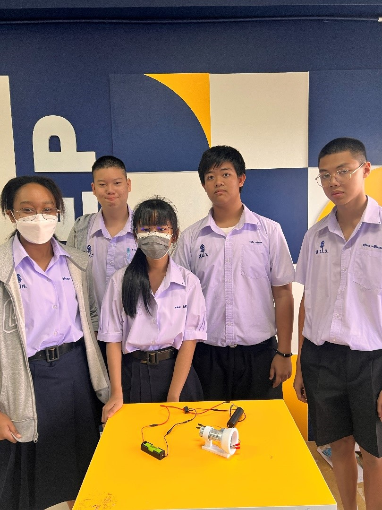

Ion thrusters don't produce power they use electrical power (from a battery or solar panel) to push out charged particles and create thrust, kind of like a very gentle, silent jet engine that runs on electricity instead of fuel. Two main types: Spacecraft thrusters (like NASA's NSTAsR) work in the vacuum of space, use xenon gas, very efficient but weak thrust. Used on real missions like Deep Space 1 and Dawn, and for keeping satellites in position. DIY desktop thrusters (like Integza's) work in regular air using very high voltage (10,000 🠆 30,000 + volts) between two electrodes. No moving parts, just a quiet stream of air. Strong enough to blow out a candle or push a tiny boat, but way too weak for real vehicles.
How the DIY version works: A sharp metal point (emitter) at high voltage strips electrons from nearby air, creating charged particles (ions). Those ions get pushed toward a rounded collector, dragging air along with them that moving air is the thrust.
Key comparison: The DIY thruster uses much higher voltage than a spacecraft thruster, but produces far less thrust and can't work in space at all.
Pros: silent, no moving parts, cheap to experiment with (for DIY); super fuel-efficient (for spacecraft versions). Cons: weak thrust, needs constant power, DIY versions only work in air, and high voltage requires safety precautions (shock risk, arcing).Bottom line: Whether it's a candle-blowing desktop toy or a spacecraft engine, it all comes down to the same idea using electricity to push charged particles and create thrust.
